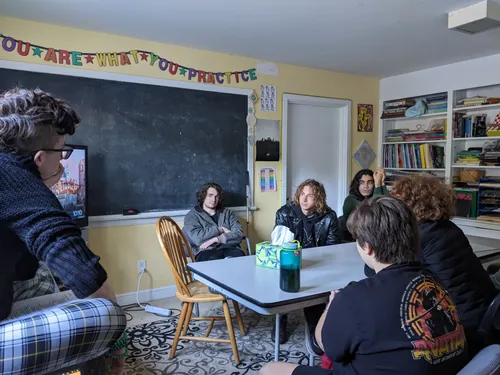
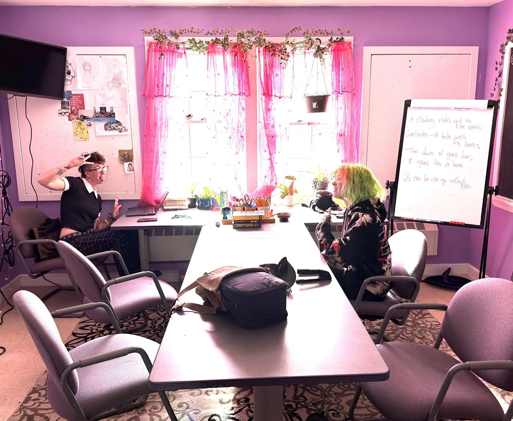
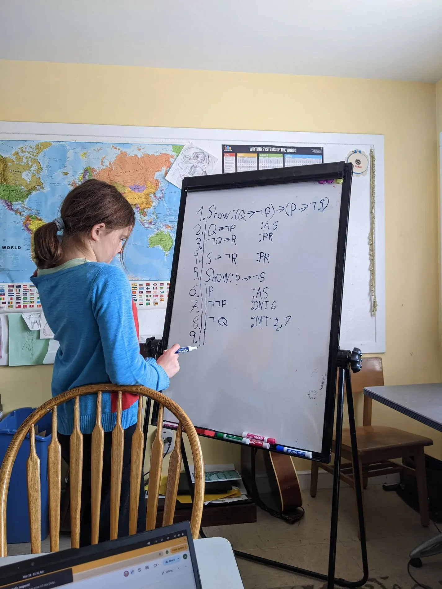
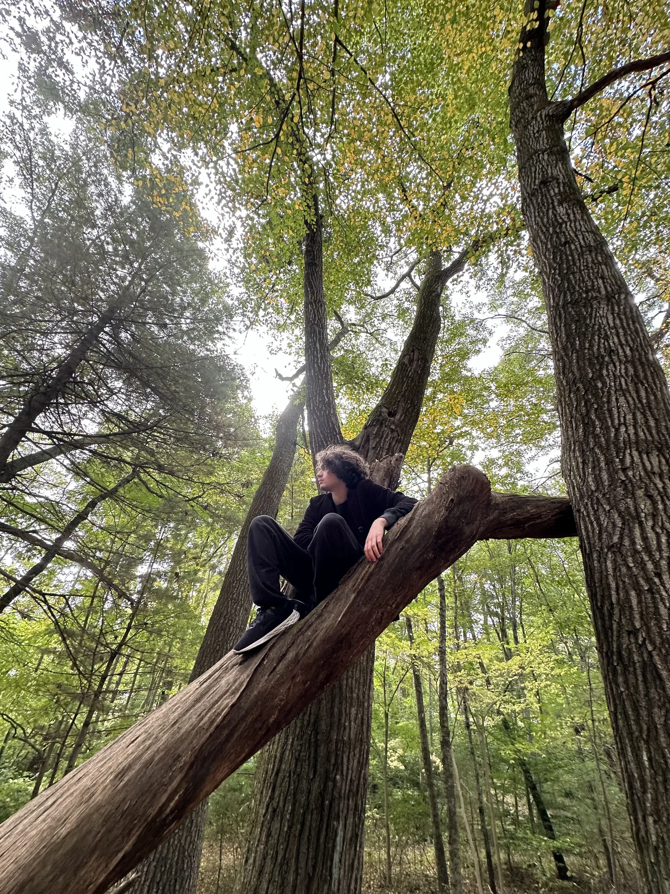

At BSLC, all classes are optional, and there are no grades. All members are homeschooled, and BSLC is a place where they come to learn and connect. So what does "getting an education" look like at BSLC? It starts with…
At BSLC, young people spend time together across ages, interests, and backgrounds, without the social pressures that school hierarchies create. Members participate in a wide array of activities together while building lifelong friendships.
BSLC welcomes all young people seeking freedom through education, regardless of race, ethnicity, national origin, economic background, cultural background, religious affiliation or belief, gender identity, sexual orientation, disability, neurotype, family structure, or immigration status.


Every member meets with their mentor once per week. Mentors support members as they reflect on their goals, and help strategize about how to achieve those goals.
BSLC offers a wide variety of classes and activities throughout the week, all based on the needs and interests of current members. At any given time, folks might be playing in a band, presenting Euclidean demonstrations, writing poetry, learning algebra, doing a cosplay photoshoot, or practicing formal logic.


At BSLC, members come and go freely. If you want to step out of a class, you can. No one needs to ask for permission to use the bathroom. If you want to walk to the library or grab a slice of pizza down the street, go ahead.
We trust our members to make choices about their time, and we're here when they need us.
Here's a sample day based on a typical Tuesday during the 2025–2026 year. Although we have classes and activities scheduled throughout the day, everything is voluntary.
Members make their own schedules. They might use blocks of time for independent study, to meet with a mentor one-on-one, or to go on a walk with friends. We offer lots of structure, and members get to choose how they want to opt in.